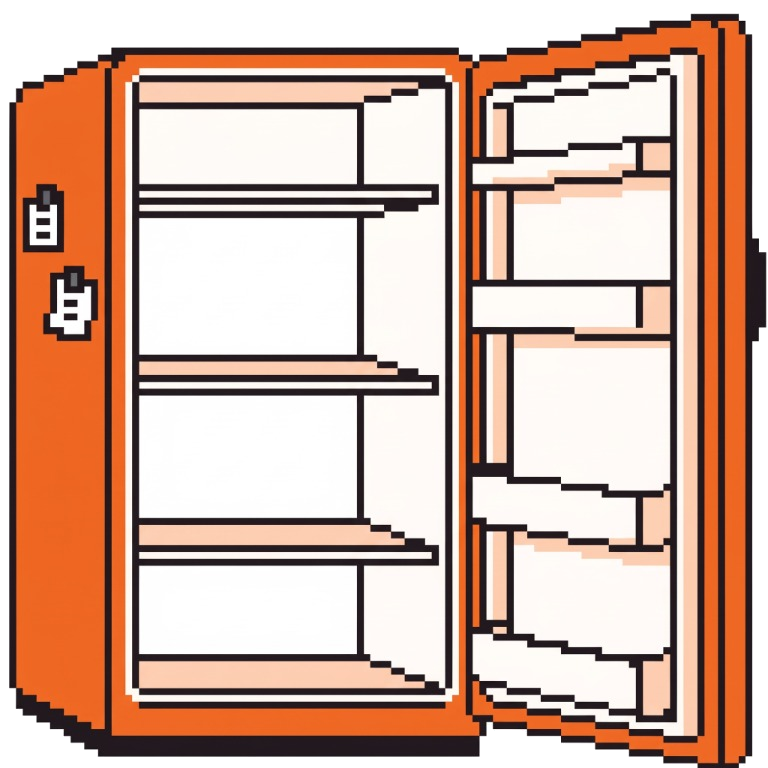
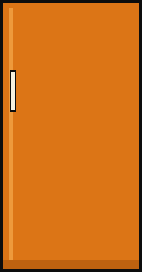
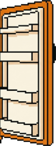
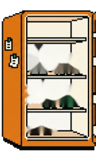
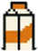
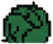
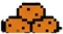

01 ПРОДУКТИ / 02 РЕЦЕПТИ / 03 ГОТУЄМО
Почни з продуктів, які вже маєш.







Можна нічого не купувати.
Навчальний приклад: форма відкриває готовий набір рецептів. Введені умови ще не обробляються.